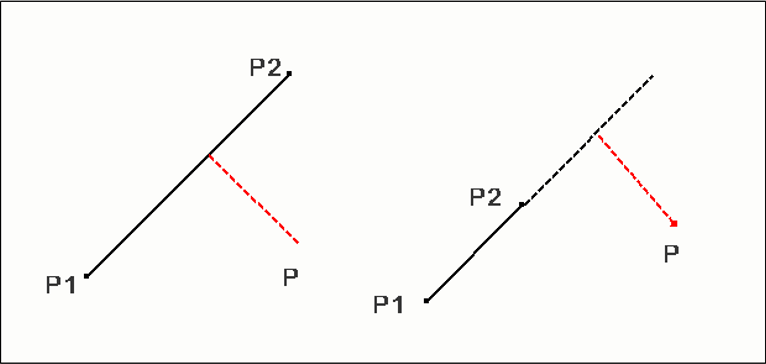
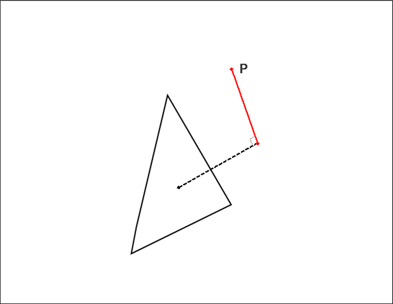
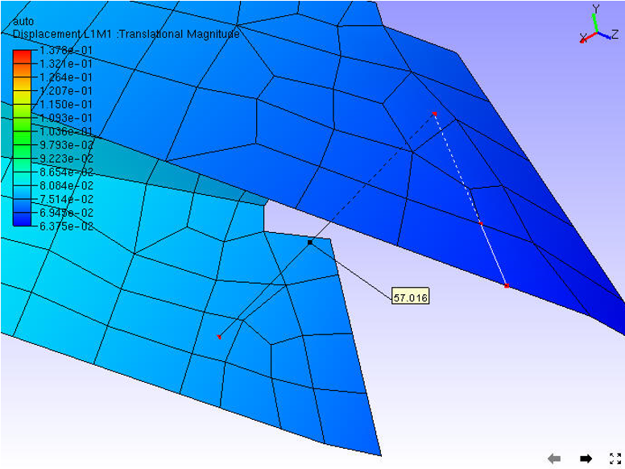
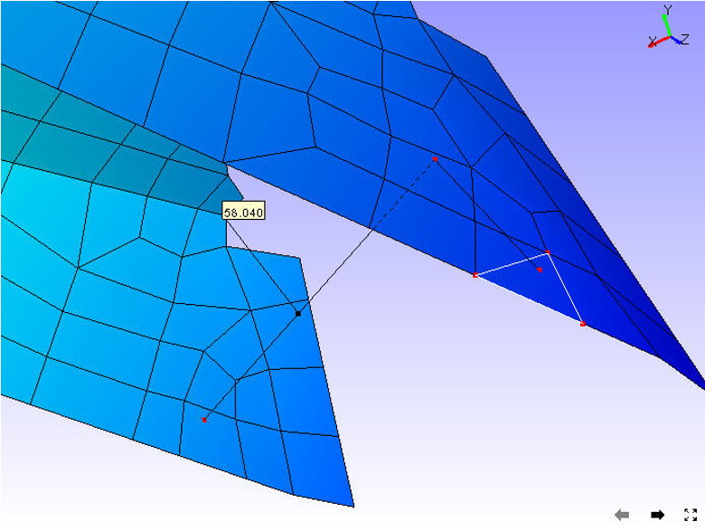

Measuring 3D distance
VCollab Pro users can measure the shortest 3D distance in a model between two points, point to edge and point to face. Annotation labels with measured value will be attached to the dimension lines.
Point to Point: Measures distance between two points.
Point to Edge: Measures shortest distance between a point and an edge picked by the user.

Point to Face: Measures shortest distance between a point and a triangle picked by the user.

Steps to measure the distance between two points in the model
Click Tools | Measurements | 3D Distance or the 3D icon
 from the toolbar
from the toolbarClick 2 points of interest on the model to measure the distance
The points clicked are highlighted in red and a line is drawn between the endpoints
An annotated label with distance value is attached to the middle point of the line drawn.

Double clicking on the label pops up a measure label dialog box
User can edit the measure name and its attributes.
Steps to measure distance between a point and an edge
Click Tools | Measurements | Point to Edge.
Click a point on the model and click on the closest triangle edge.
The point and the closest edge will be highlighted in red. Edge is extended if end point of the perpendicular does not lie on the edge segment.
An annotated label with distance value is attached to the middle point of the line drawn.

Steps to measure distance between point and a face
Click Tools | Measurements | Point to Face.
Click a point on a model and click on a model triangle.
The point and triangle points will be highlighted in red.
An annotated label with distance value is attached to the middle point of the line drawn.
